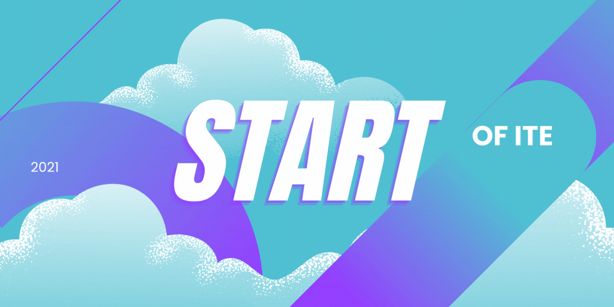
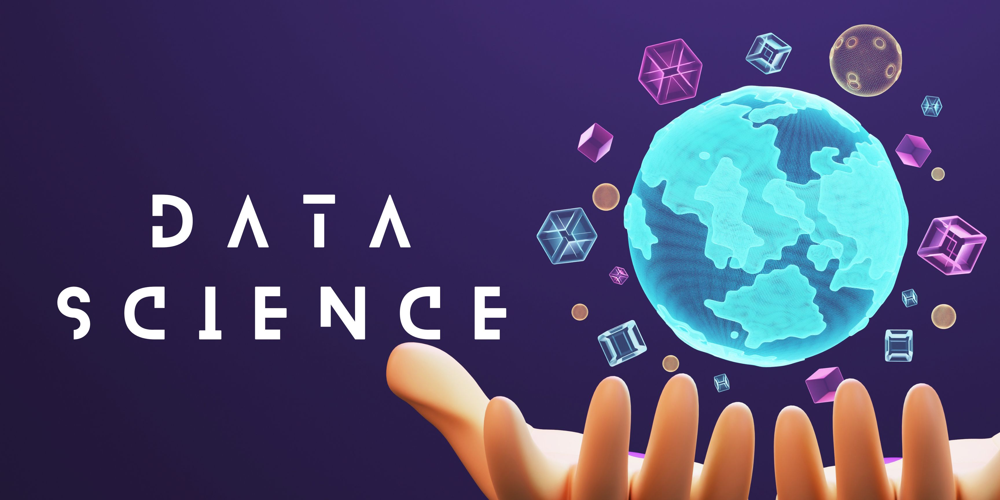

My Goals
Goal 1
Reduce
My main goal is to promote sustainability and minimize waste by actively reusing items in good condition through donation and repurposing. By donating usable items I no longer need, I can benefit others and extend their lifespan. Moreover, I seek creative ways to repurpose items for different uses, fostering resourcefulness and reducing waste. Through prioritizing reuse, I aim to make a positive impact on the environment and encourage a sustainable lifestyle.
Goal 2
Reuse
In addition to reusing and repurposing items, I also aim to reduce wastage, especially concerning plastic bags at grocery stores. To achieve this, I bring my own reusable bags when shopping instead of using store-provided plastic bags. This helps minimize single-use plastic waste and conserves natural resources used in their production. I hope to raise awareness about plastic pollution and inspire others to adopt similar practices. By choosing to forgo plastic bags, I take a small but meaningful step towards a more sustainable and environmentally conscious lifestyle. Additionally, I actively support grocery stores and markets with sustainable practices.
Goal 3
Recycle
Lastly, my ultimate goal is to make recycling an integral part of my lifestyle, encompassing various recyclable materials like plastic, batteries, wood, paper, and more. I firmly believe responsible waste management is essential for preserving the environment. To achieve this, I consistently prioritize sorting and properly disposing of these materials, ensuring they reach appropriate recycling facilities. By actively engaging in recycling programs, I contribute to reducing waste in landfills. Each recycled plastic container, battery, or piece of wood represents a victory against resource depletion and pollution. Additionally, recycling paper conserves trees and protects the delicate ecosystems they support.

2021
Start of ITE
After my N-levels i joined ITE to pursue IT and Engineering. I joined Electronic Engineering. This was where i grew fond of coding and networking. From the moment i started my course i have fallen in love with coding. I started with micrsoft visual basics as my first language.

2023
End of ITE
2 Years in ITE flew by i made so many memories and friends. This was one of the best periods of my life as i feel that the friend ive made in ITE are my friends for life.With that i also found my passion in helping people and coding. I learnt many languages like python,arduino,c++ and many more.

2023
Start of Poly
Before i applied for polytechnic i came across this course called Applied AI and Analytics. I realized that the course was pretty hard to enter. Since i worked very hard during ITE and attained a very good GPA i had an oppurtunity to apply for this course and with coding being my passion it felt like the right decesion.
